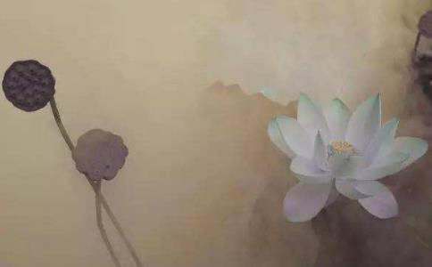

在
有一次童女迦叶跟五百
婆罗门弊宿向来不信有来世、
弊宿言：“依我看，并没有所谓的来世、
迦叶问：“那么你认为天上的日月，是此世有，还是他世有？是人为的，还是上天所造的？”
弊宿言：“日月是他世有，并非此世；是上天所造的，非是人为。”
迦叶说：“由此可知，必定有他世、有善恶业报。”
弊宿言：“我还是不相信！”
迦叶便问：“是什么因缘，使你如此坚信没有来世、转生、善恶业报？”
弊宿言：“我有位亲友生病将死，当我去探病时就和他约定——‘如果真如
迦叶就举个譬喻说：“有个盗贼被王所捉，将要赴刑场的路上，哀求守卫说‘求你放我回去和亲人告别，我一定会再回来的！’请问守卫会放他回去吗？”
弊宿回答：“当然不会！”迦叶说：“同样的道理，狱卒怎么可能放你的亲人回来呢？所以，你的执着是错误的。”
弊宿又说：“但是，我有另一位亲人，平日广行十善，死前我也和他约定，如果生到天上，一定要回来告诉我，这样我才会相信有来生、善恶业报等事。但是，至今他都未曾回来过！”
迦叶回答：“譬如有个人掉到厕所里，国王不但派人把他救出来，还用香汤为他沐浴干净后，抹上香粉、香水，让他穿上最好的衣服、吃美味的食物，并且提供歌舞伎乐，请问这个人还会想回去泡在厕所中吗？”
弊宿说：“当然不会！厕所那么臭秽不堪！”
迦叶言：“在
弊宿又说：“我还有位亲人，在世时持守
迦叶回答：“
弊宿回答：“忉利天的二、三天，是人间二、三百年，那时我早不在了！虽然你这样说，但谁知道忉利天的天寿果真如你所说？”
迦叶又举个譬喻说：“有人天生眼盲，不知颜色、长短等相，也没有见过日月星辰、高山流水。所以就说没有这些东西，对不对？”
弊宿回答：“当然不对。
迦叶说：“这就如同你不知忉利天寿多长，便不相信一样。”
弊宿说：“沙门说‘人有识神’。可是人死时，都不曾看到有识神跑出来，所以我不相信有来世。”
迦叶反问：“你在高楼睡觉时，有没有梦见过山川江河、园林街道？”
答：“有。”
迦叶又问：“你睡觉时，旁边有侍卫吗？”
答：“有。”
迦叶又问：“当你梦见山川江河、园林街道时，你的侍卫曾经见过你的识神出去吗？当你醒来，侍卫又曾见到你的识神回来吗？”
答：“没有。”
迦叶言：“你现在活着，人们尚且不见你的识神出入，更何况是死人呢？在
迦叶又说了个譬喻：“从前有位事火梵志，有事外出，要他的
弊宿说：“我绝不能舍弃断灭理论，因为我从生下来就是这么认为，而且也教导许多人，包括国王、大臣，大家都知道我是断灭学者。”
迦叶说：“譬如有二人出外求财。最初找到了麻，二人就载了很多；后来又见到麻布，一人舍弃麻而取麻布，一人坚持不舍，认为麻就很好了。再往前走，又有更好的贝劫缕，一人舍麻布取贝劫缕，一人还是坚持着麻。而后，不论再找到更好的白铜、白银、黄金，其中一人便舍原来所有，取较好的；另一人依旧坚持不舍。回到家乡后，带回黄金的人受到大家的欢迎；而坚持取麻的人，被人所取笑。你也是如此，坚持邪见，终究没有益处。”
弊宿说：“如果真如你所说行善生天，你现在应该以刀
迦叶说：“譬如有个富者，死后留下二位妻子。大老婆生了几个儿子，小老婆才刚怀孕。分财产时，大老婆认为小老婆没有小孩，所有财产都该归她和她的儿子们所有。小老婆则认为要等她生产后，若是男孩也该有一份财产。但是大老婆的儿子不肯，再三地要求分财产。小老婆心急之下，就以刀剖腹看是男是女。结果，母子双亡。你自己身怀邪见，不但自误且害人，不如沙门精勤
弊宿说：“尊者，其实，当您最初问我‘日月是此世有、他世有？’时，我就已经知道自己的谬误。之所以一直追问，目的是想见识一下尊者的辩才与智慧，以增强
迦叶言：“你应当皈依于我师
弊宿问：“世尊在哪里呢？”
迦叶言：“世尊刚灭度不久。”
弊宿说：“既然如此，我就皈依灭度如来及法和众僧。自今以后，尽形寿持守五戒，并且广行布施。”
于是，不仅是弊宿婆罗门得度，在场所有梵志、婆罗门和